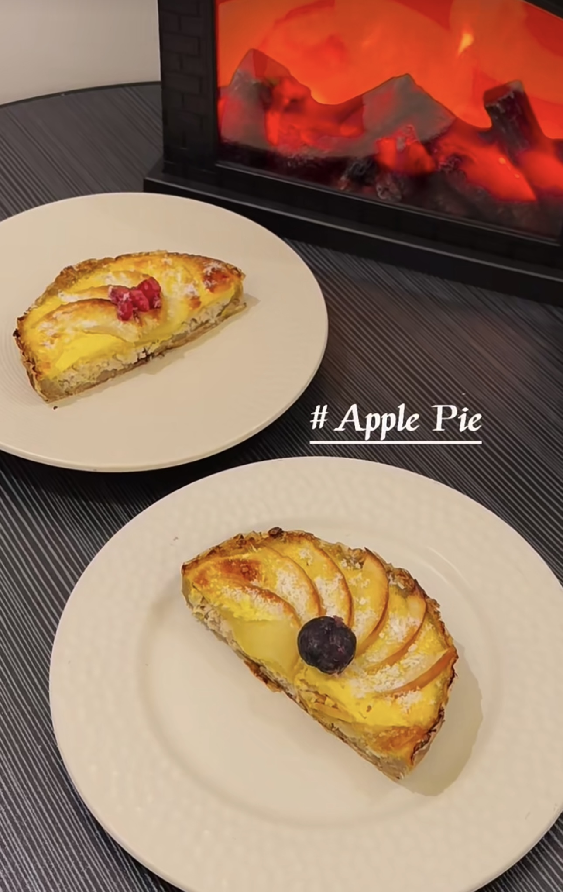

Turkey and Apple Pie for Dogs
This healthy turkey and apple pie will keep your dog warm and happy during the winter months.
Ingredients:
- 1/2 ripe banana
- 1 apple
- 1 cup oats
- 1 turkey breast, ground
- 1 egg
- Coconut flakes
- Berries (blueberries preferred)
Instructions:
- Mash half a banana until it's a smooth puree.
- Mix in the oats.
- Spread the mixture onto a baking sheet, making a few holes in the surface.
- Bake at 180°C (356°F) for 10 minutes to set.
- Spread the ground turkey over the baked surface, making more holes.
- In a separate bowl, whisk together one egg and pet milk (or goat's milk).
- Slice the apple and place the slices on top of the ground turkey.
- Pour the egg mixture over the apples.
- Bake again at 180°C (356°F) for 25 minutes (adjust time based on the size of the oven).
- Your delicious Turkey and Apple Pie for dogs is ready to serve!
